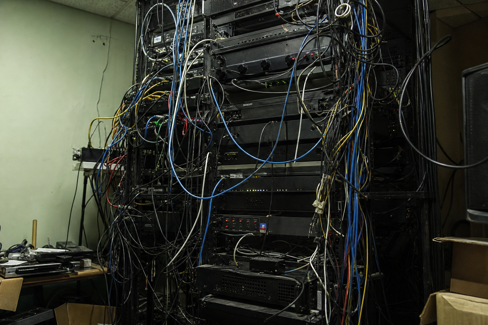
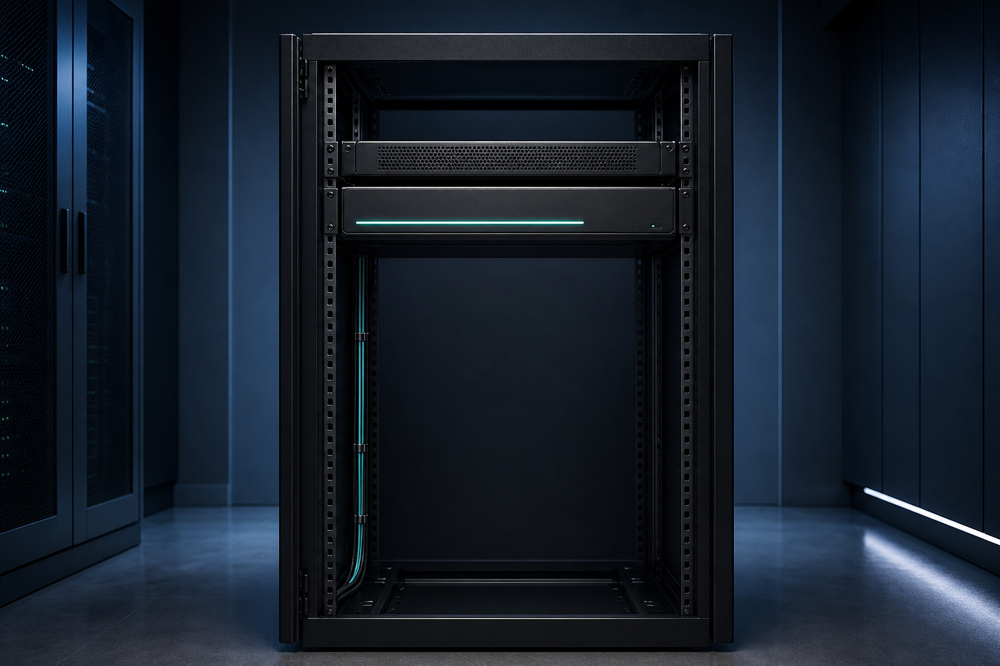

The hardware
This is everything LUCI puts in your rack. One standardized, orchestrated footprint replaces the closet of disconnected boxes that grows—and tangles—every time a new system is added.
Typical A/V rack

With LUCI

Less hardware, less heat, less to fail. LUCI consolidates the systems running your property into a single orchestrated rack—tangible proof that the platform isn't just software, it's a cleaner install your facilities team will thank you for.
Concept renders — swap for real LUCI product/install photography when available. Labels and framing are brand-styled and will carry over to the final shots.
LUCI Systems · Capabilities
The hardware footprint